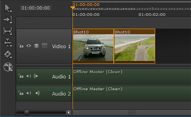

注意: 自定义镜头预设只能从 项目设置 如果它们包含 Nuke 项目文件 和 核写入节点 内容预设。
| 1。 | 单击 Nuke 项目文件 显示脚本设置的内容预设。 |
| 2. | 选择 写节点 从下拉列表中，检查 shot 模板中的哪个路径应该用于 Nuke 写入节点。例如: |
{Shot}/nuke/渲染/{shot} _ comp {_ Nameindex} _ {版本}。#。{ext} 解析渲染路径的步骤 Nuke 工作室 希望在文件渲染时找到它们。
注意: 如果你包括一个 Nuke 注释文件 内容预设，启用 注释 Precomp 创造者。请参阅 注释 欲了解更多信息。
| 3. | 如果您要导出重定时媒体，请设置您希望 Nuke 脚本如何处理重定时: |
• 没有 -不应用重定时。
• 运动 矢量插值用于计算帧间的间隔。这是最准确的重定时方法，但渲染需要更长时间。
• 框架 -显示最近的原始帧。
• 混合 -两个帧之间的混合用于帧之间的混合。这可以快速渲染，并且在将方法设置为 运动 .
| 4. | 添加到导出中的剪辑实例的软效果包含在结果中 Nuke 默认脚本。如果你不需要软效果，禁用 包括效果 从脚本中省略它们。请参阅 软效果 欲了解更多信息。 |
| 5. | 选择所需的重新格式化选项: |
• 板分辨率 -以剪辑的原始分辨率导出，无论时间线中设置了什么。
• 到序列分辨率 -在时间表中设置的分辨率下导出 序列 面板 输出分辨率 下拉列表。
• 自定义 -激活 重新格式化 允许您自定义导出分辨率的控件。
| 6. | 启用 整理 拍摄时间 或 整理镜头名称 在同一脚本中为剪辑创建额外的 Nuke Read 节点，这些剪辑通常会被轨道层次上较高的剪辑或具有相同剪辑实例名称的同一轨道上的剪辑隐藏。 |
注意: 如果选择了读取节点，则无法启用 整理 函数。
例如:
• 整理拍摄时间 -轨道 1 上的项目，否则会被轨道 2 隐藏。
|
|
|
| 时间轴环境 | 合成环境 |
注意: 默认情况下，不同轨道上的快照不会连接。如果您希望所有导出的剪辑都连接到 Nuke 脚本写入节点，请启用 连接轨道 .
• 整理镜头名称 -同一轨道上的两个项目具有相同的镜头名称。
|
 |
|
| 时间轴环境 | 合成环境 |
| 7. | 如果要在导出时向脚本中添加其他节点，请启用 其他节点 并单击 编辑 。请参阅 在导出期间添加其他节点 欲了解更多信息。 |
| 8。 | 继续到 核写入节点设置 以确定写入节点的行为。 |
|
|